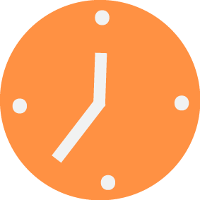
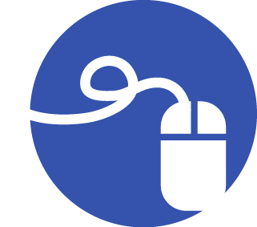

|
Donate | Visit our Donate page for contributing financially. |
|  | Volunteer | Contact us to learn more about current needs and opportunities. Email info at seattlemuses dot com. |
|  | Follow us | Stay engaged by liking us on Facebook. |
| Share | Tell your friends about us by sharing our Facebook posts or website! Because sharing is caring. |